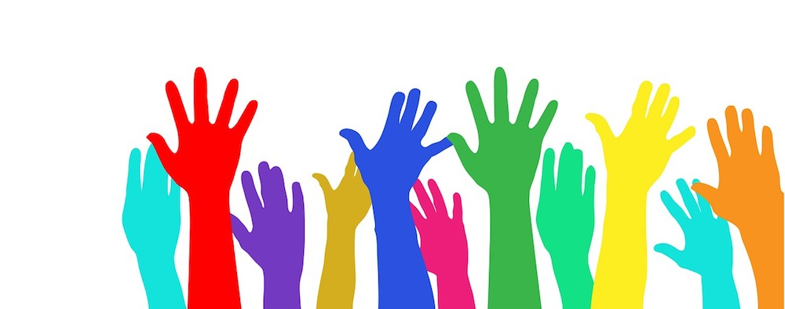
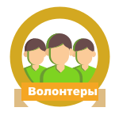

О волонтерстве

Наши волонтеры — это жизненные силы фонда «Старость в радость»: они принимают участие в поездках и концертах,
собирают и
вручают подарки, помогают на мероприятиях и сотрудничают с фондом pro bono. В 2006 году мы начинали с группы в 30
неравнодушных студентов — а сейчас уже тысячи волонтеров по всей стране объединяют свои усилия для помощи пожилым
люди на всех уровнях.
А еще они дружат, путешествуют и занимаются делом, результат которого виден сразу, какую бы помощь волонтеры ни
оказывали фонду.
«Помогай чем можешь, помогай как хочешь» — вот девиз нашего волонтерского направления.
Отправить заявку на волонтерсво
Зачем становиться волонтером фонда
Решайте социально значимые задачи
Помогай чем можешь, помогай как хочешь

Присоединитесь к большому сообществу волонтеров
Получайте приятные бонусы
Расскажите друзьям о своих добрых делах
Радуйтесь тому, что делаете!
Направления волонтерства:
- 👵🏻 Волонтерские поездки в дома престарелых — ищем музыкантов, творческих личностей и просто отзывчивых людей
для поездок к бабушкам и дедушкам.
- 🚗 Помощь с транспортом в волонтерских поездках — ищем добрых людей, которые отвезут волонтеров в
дома-интернаты.
- 🚙 Помощь с транспортом по Бишкеку — ищем волонтеров, которые помогут с доставкой людей и вещей по Москве.
- 🎈 Помощь в мероприятиях, проводимых фондом — если вы готовы помогать нам в организации мероприятий, заполните
анкету волонтера.
- 💌 Внуки по переписке — ищем тех, кто готов вступить в переписку с бабушкой или дедушкой, и регулярно писать.
- 👨🏻💻 Помощь профессиональными умениями и навыками (pro bono) — ищем профессионалов, у нас для вас есть
интересные задачи!
Чем обеспечивается каждый волонтер
- Методическими материалами и обучением (каждый первый четверг месяца мы устраиваем встречу для волонтеров
“Волонтерский четверг: знакомство”, где рассказываем и показываем все, что вам нужно знать о волонтерстве в
фонде).
- Атрибутикой фонда (майки, браслеты, наклейки, брошюры — в зависимости от цели поездки).
- Доступом к группам и чатам для информирования о мероприятиях, поездках и прочем.
- Бесплатными или льготными билетами в театр или на балет (билеты несколько раз в месяц, количество мест
ограничено, но они появляются регулярно).
Отправить заявку на волонтерсво
Как стать волонтером
Очень просто! Для начала — познакомиться!
Мы приглашаем вас на знакомство с фондом, обязательное для каждого волонтёра. Там вы узнаете всё, что вам будет
необходимо в вашей волонтёрской жизни: как помогать пожилым людям, как вести себя с бабушками и дедушками, что
можно и чего нельзя делать в домах престарелых. Кроме того, вы сможете задать вопросы сотрудникам фонда.